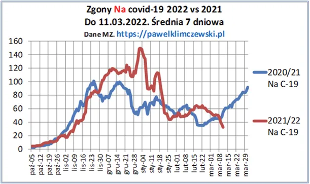
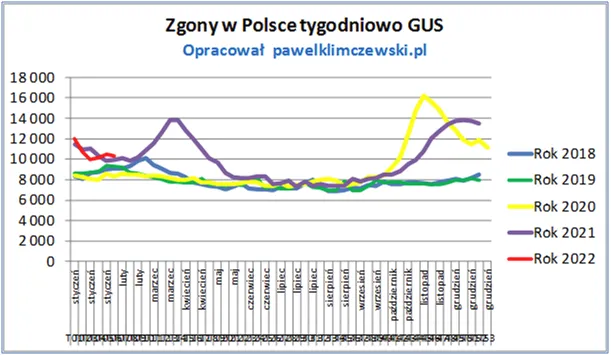

Wirus odmaszerować !
Dokładnie po 24 lutego wirus przestał być ofensywny, z trendu wzrostowego przeszedł do defensywy. Łagodna zima i słoneczna pogoda podobnie jak dwa lata temu sprzyjają szybkiemu zakończeniu zimowej, sezonowej fali zachorowań i zgonów. Musimy ciągle przypominać, że normalny poziom zgonów w Polsce zimą to ponad 1300 na dobę w tym ponad 100 na choroby układu oddechowego.

Niestety dane o śmiertelności w Polsce za 6 pierwszych tygodni pokazują, że nadal zgonów nadmiarowych jest blisko 2000 za dużo na tydzień czyli ponad 250 na dobę. Jest to ponad 6 razy więcej niż tych wykazywanych jako skutek "modnej" choroby. Wśród tych, którzy znajdą na wykresie w 2020 roku, wiosną, pierwszą falę rozlosuję atrakcyjne nagrody ;)

Paweł Klimczewski